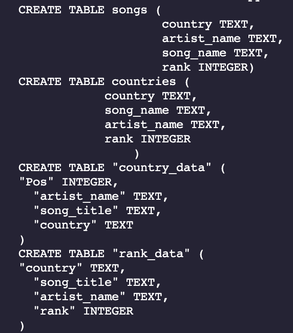
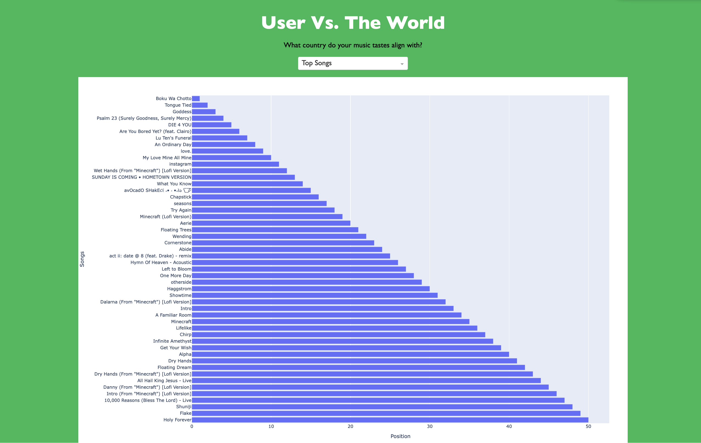
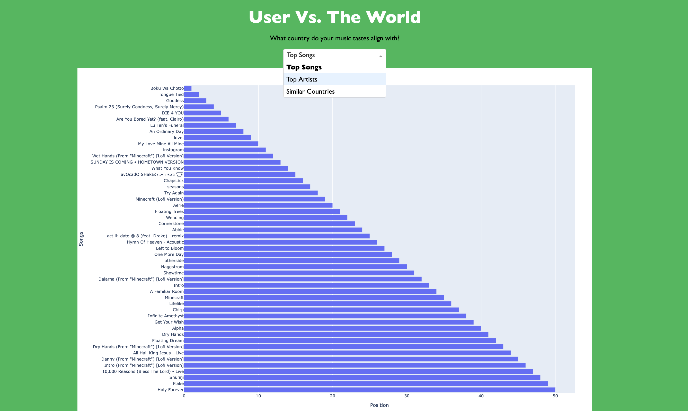
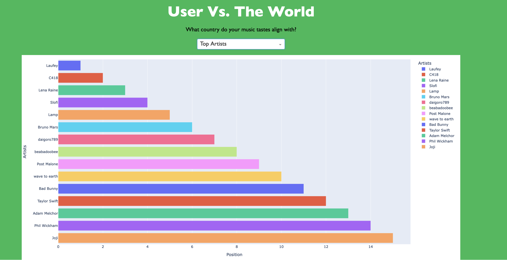

For the final project, we built a data visualization that takes in data from the user and compares them to countries. They will be matched with a country that has similar music tastes with the user.
Team members: Justine Constantino, Andrew Han, Jessica Xiao

Purpose of User Vs. The World
User Vs. The World is meant to connect different users to countries and learn more about them through music. Our app aims to help users discover new cultures through similar music tastes that countries have.
Target Audience
We aim to target those who are interested in seeking out songs from different countries that they may have similar interests with.
How We Built the App
In order to build our web app, we scraped data from kworbs.net, implemented a SQL database, and created data visualizations via Plotly Dash website.
- Plotly Dash: Plotly Dash is a Python interface that creates interactive web applications. We used this to help integrate plotly to create a dynamic dashboard.
- Plotly: Plotly is a python library that helps build complex, dynamic, and interactive data visualizations. We used Plotly to help create our graphs.
Technical Components
- Web scraping and Datacleaning:
- The first step that we had to do was to scrape data. We utilized BeautifulSoup, which is a Python package that parses HTML and XML documents. We scraped from kworbs.net, specifically from their Spotify Charts data. We scraped 200 songs from a total of 75 countries. The songs come from weekly charts and go from a rank of 1-200. After scraping the data, we imported it onto a CSV file and cleaned it up so that the columns contained:
rank,song_title,artist_name, which are the important pieces of content that we need for the project.
- The first step that we had to do was to scrape data. We utilized BeautifulSoup, which is a Python package that parses HTML and XML documents. We scraped from kworbs.net, specifically from their Spotify Charts data. We scraped 200 songs from a total of 75 countries. The songs come from weekly charts and go from a rank of 1-200. After scraping the data, we imported it onto a CSV file and cleaned it up so that the columns contained:
- SQL Database
We inserted all the data into a SQL database for easier access when trying to compare the country data to the user data. We created four tables:
songs,countries,country_data,rank_data. For this project, we mainly used thecountriestable since it was the most straightforward. We created different queries depending on what we needed, such as selecting unique songs per country.Here is an example of the tables within the database. 
- Web Development with Plotly Dash
- Dash’s interface allowed graphs to be plotted easily on a web app. We had to learn how to code in Dash using their documentation and this is our final result.
Final Web App
Components of Our Website
- Dropdown Bar
- The dropdown bar gives options of what graph the user wants to select: Top 15 Artists, Top 50 Songs, Countries that the users matched to.
- Graphs
- The graphs change depending on what the option the user decides to choose. The options are listed above. Here are some examples of the graphs:
- Recommendation System: We built the recommendation system by using a SQL query that accesses the database, and looks through each otf the countries and retrieves distinct songs specific to that country. The user’s top tracks will be retrieved and then see which songs from each country match with them. Whichever country has the most songs matching with the user, then that is the country they match most.
Here is an example of what the website looks like:



Takeaways
- I learned many things from this project. I feel like we were quite ambitious with what we wanted to deliver, which led us to not completing a lot of our project. It felt overwhelming to balance all the elements, components, along with the time that my groupmates could dedicate to this project. However, I am content with the fact that we were able to produce something that worked and catered to our original goals. We understand that there are a lot of different things that we can improve upon, however we were able to meet the specifications for the project which is the best part.
Ways to Improve
Aesthetics: There are many ways to improve upon our project, and I believe the biggest one is the aesthetics. It could be improved more upon the way the layouts and the color, but this comes with knowing how code more in Dash.
Recommendations System: We noticed that there were only a few common songs shared between the country and the user. Perhaps the recommendation system can be changed so that there is another way to figure out the similarities between the user and their respective country.